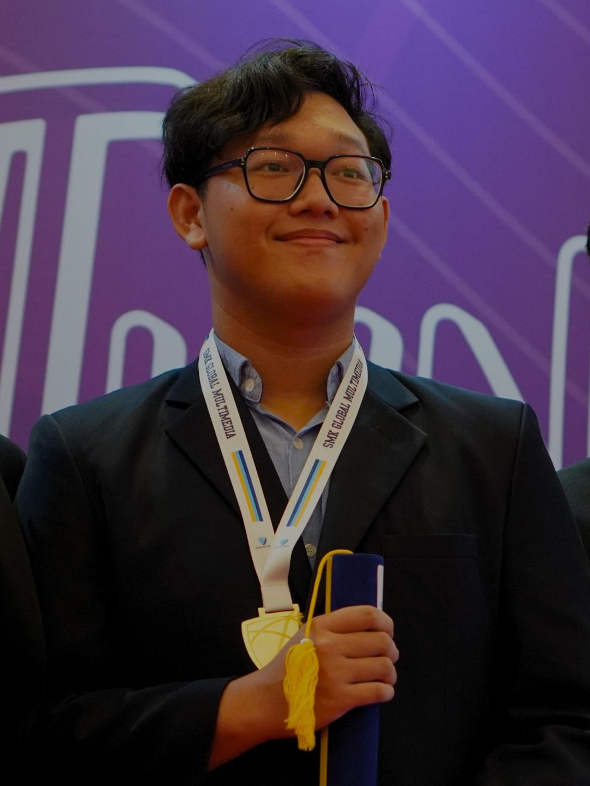

Cello Farrel Tanojo
Programmer, designer, creative thinker
A creative thinker's journey through exploration
I'm an enthusiastic explorer of the creative and technological realms, boasting nationally recognized certifications in graphic design, videography, photography, motion graphics, and 3D animation. With a robust foundation in game development acquired during my academic journey, I currently channel my passion for innovation as a computer science student at one of Indonesia's top private universities.
In collaborative environments, I thrive on pushing the boundaries of creativity and technology, constantly seeking new opportunities for growth and exploration. Beyond academics, I immerse myself in experimenting with cutting-edge creative tools and staying abreast of the latest trends in digital media. This multifaceted approach allows me to infuse my work with fresh perspectives and dynamic solutions.
I thrive on experiential learning, driven by a passion for hands-on exploration and discovery. Beyond traditional learning spaces, I immerse myself in diverse experiences across various forms of digital media and technology. Whether it's engaging with interactive storytelling, or discovering innovative design concepts, I believe in the power of learning by doing. These dynamic experiences not only fuel my creativity but also shape my approach to innovation and problem-solving.
My journey is characterized by an unwavering commitment to growth, creativity, and innovation. I eagerly anticipate the continuation of this journey and the opportunity to leave a lasting impact through my work. Thank you for taking the time to delve into my story, and I look forward to the exciting ventures that lie ahead!

A realistic creative thinker
Constantly improving with new creative goal in mind
Experiences
2023
Programmer + Designer
Apple Developer Academy
During my time at the Apple Developer Academy's iOS Foundation Program, I immersed myself in mobile programming and design, honing my skills in Swift and crafting user-centric experiences. Collaborating with peers and mentors, I embraced challenges as opportunities for growth, preparing me to shape the future of mobile technology with creativity and ingenuity.
2023
Creative professional
Badan Nasional Sertifikasi Profesi
Proudly certified as a creative professional by Badan Nasional Sertifikasi Profesi, I've attained expertise in design, editing, photography, videography, and animation. This certification reflects my commitment to excellence and proficiency across diverse creative domains. Ready to bring a blend of skills and creativity to any project, This certification is a testament to my dedication to excellence and sets the stage for me to elevate my craft to new heights.
2022-2023
Movie Producer + Writer
Lux Documentary
As a movie producer and writer, I crafted a compelling film celebrating the bright future of electric vehicles amidst the unique challenges facing Indonesia. Collaborating with a talented team, I showcased the potential of clean transportation while highlighting the obstacles to overcome. This project fueled my passion for storytelling and commitment to shaping a sustainable future through cinema.
2020-2022
Video Editor
Lions Club International
As a volunteer video editor at Lions Club International, I dedicated my time to creating impactful content that raised awareness about cancer, diabetes, hunger, and vision impairment. Through my work, I aimed to shed light on these pressing issues and inspire action within communities.
Educations
2023-2027
Computer Science
Binus University
As a Computer Science student at Binus University, I'm diving deep into the world of coding and problem-solving. Surrounded by a vibrant community of learners and supported by experienced faculty, I'm honing my skills in programming languages and algorithms. Each day presents new challenges to tackle and opportunities to grow, preparing me for a future where technology meets innovation head-on.
2020-2023
Multimedia
Global Multimedia Creative
During my time at Global Multimedia Creative School, I dived into a diverse range of disciplines including 3D design, video and photography editing, graphic design, motion graphics, and game development. Through immersive learning experiences, I cultivated a versatile skill set and a keen eye for creativity. From crafting captivating visual narratives to exploring the intricacies of game design, each endeavor ignited my passion for multimedia innovation. Empowered by hands-on projects and expert guidance, I emerged as a multifaceted creator poised to make a meaningful impact in the dynamic world of digital media.